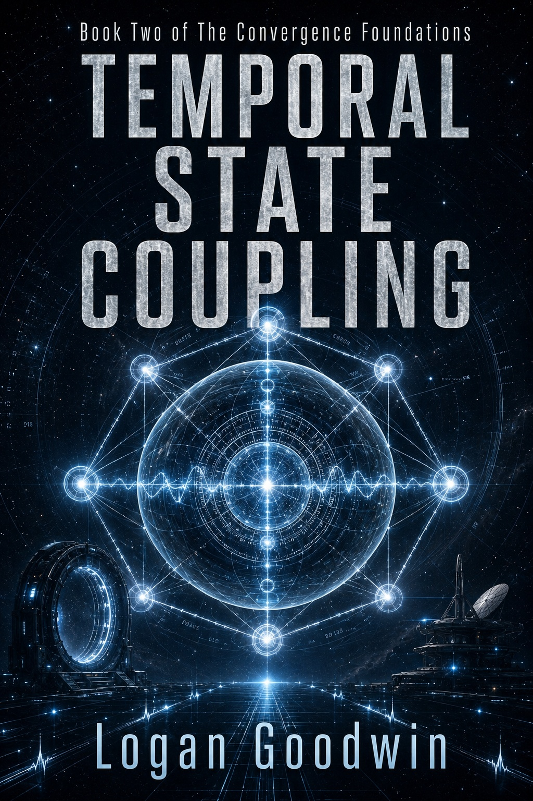

Speculative science fiction
COGIMA: A Novel
A machine that can say everything. A boy who can say almost nothing. A father searching for the equation that could change consciousness—and all of them.
Fiction, dark worlds, hard science, comedy, practical guides, and expanding series. Frontline Publishing — Books, Audiobooks & Story Media by Logan Goodwin — manages the complete catalog and retailer links.
Featured titles
These five titles represent the range of the catalog. Each links to its complete Frontline Publishing detail page.
A machine that can say everything. A boy who can say almost nothing. A father searching for the equation that could change consciousness—and all of them.
Gravity-locked kinematics, spatial drift, and the dangerous structures that remain when reality stops behaving as expected.
The Ballad of Billy & Tammy turns poor decisions, fast consequences, and back-road chaos into a sharply comic ride.
A boy whose dreams do not behave like dreams discovers that imagination may be a map—and the wrong door may already be open.
A plain-English journey through hardware, software, networks, cybersecurity, cloud computing, and the road to artificial intelligence.
Browse the publishing catalog
These pathways open the dedicated Frontline Publishing pages while LoganGoodwin.com remains the home of the author, music, commentary, technology, and selected work.
AI, consciousness, gravity, temporal systems, and reality under pressure.
Browse science fiction → 02Ghosts, punishment, false worlds, hidden systems, and unsettling doors.
Enter the wrong realities → 03Shadow courts, dangerous bonds, paranormal romance, and gothic power.
Browse dark fantasy → 04Bad decisions, fast consequences, back-road chaos, and sharp humor.
Browse comedy → 05Plain-English cybersecurity, Linux, mathematics, and computing history.
Browse practical guides → 06Available audio editions, Chapter One previews, and Google Play links.
Listen to previews →Audiobook previews
The audiobook editions use the same cover art as their e-book counterparts. These samples represent the three titles currently available in both e-book and audiobook formats through Google Play.

Browse by shelf
COGIMA and The Convergence Foundations examine intelligence, gravity, time, structure, and the human cost of discovering too much.
Reality-bending coming-of-age fiction and dark urban mystery organized into clear reading orders at Frontline Publishing.
Gothic romance, corrupted systems, impossible doors, broken realities, and consequences that do not stay contained.
Beginner-friendly technology and math guides sit beside Billy and Tammy’s spectacularly avoidable disasters.
Complete catalog
Frontline Publishing provides full series pages, reading order, retailer availability, audiobooks, and story media.
Browse the complete catalog